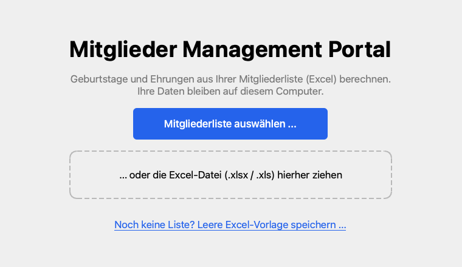

Mitglieder Management Portal
Kostenloses Programm für Vereinsvorstände: Es liest Ihre Mitgliederliste (Excel) und erstellt daraus die runden Geburtstage, die Ehrungen für langjährige Mitgliedschaft und eine Mitgliederstatistik. Ihre Daten bleiben auf Ihrem Computer.

Das Programm läuft auf einem Windows-PC oder einem Mac. Bitte öffnen Sie diese Seite am Computer (Adresse: tomegen.github.io/member-admin).
1. Herunterladen
Windows
Windows 10 oder 11
Für Windows herunterladenOhne Installation (z. B. für einen USB-Stick): ZIP-Datei
Mac
Mac mit Apple-Chip (M1 oder neuer, ab Ende 2020)
Für Mac herunterladenPrüfen: Apple-Menü (oben links) → Über diesen Mac → bei „Chip“ steht „Apple M…“.
2. Installieren
Installation unter Windows
- Klicken Sie auf Für Windows herunterladen und öffnen Sie die heruntergeladene Datei Mitgliederverwaltung-Windows-Setup.exe.
- Falls der Browser meldet, die Datei werde „nicht häufig heruntergeladen“: auf die drei Punkte … neben der Meldung klicken → Beibehalten → Mehr anzeigen → Trotzdem beibehalten.
- Erscheint „Der Computer wurde durch Windows geschützt“: auf Weitere Informationen klicken, dann auf Trotzdem ausführen.
- Im Installationsprogramm auf Installieren und dann Fertigstellen klicken. Administratorrechte sind nicht nötig.
- Das Programm finden Sie ab jetzt auf dem Desktop und im Startmenü unter Mitgliederverwaltung.
Entfernen: Einstellungen → Apps → Mitgliederverwaltung → Deinstallieren.
Installation auf dem Mac
- Klicken Sie auf Für Mac herunterladen und öffnen Sie die Datei Mitgliederverwaltung-Mac.dmg (im Ordner „Downloads“).
- Ziehen Sie im neuen Fenster Mitgliederverwaltung auf den Ordner Programme.
- Öffnen Sie das Programm aus dem Ordner „Programme“ (Finder → Programme → Mitgliederverwaltung).
- Meldet der Mac „Mitgliederverwaltung“ wurde nicht geöffnet: auf Fertig klicken. Dann Apple-Menü (oben links) → Systemeinstellungen → Datenschutz & Sicherheit, ganz nach unten scrollen und bei „Mitgliederverwaltung“ auf Dennoch öffnen klicken, mit Ihrem Passwort bestätigen. Das ist nur einmal nötig.
- Danach im Finder links beim Laufwerk „Mitgliederverwaltung“ auf den Auswerfen-Pfeil klicken.
Entfernen: Programm aus dem Ordner „Programme“ in den Papierkorb ziehen.
3. Loslegen
- Programm starten und Ihre Excel-Mitgliederliste auswählen (oder in das Fenster ziehen). Noch keine Liste? Auf der Startseite gibt es eine leere Excel-Vorlage.
- Oben das Auswertungsjahr prüfen.
- In den Bereichen Geburtstage und Ehrungen sehen Sie die Treffer und können sie als Text-, Excel- oder Kalenderdatei speichern.
Die Mitgliederliste wird nur gelesen, nie verändert. Ausführliche Anleitung: Beschreibung des Programms.
Neue Version
Laden Sie das Programm einfach erneut über diese Seite herunter und installieren Sie es wie oben. Ihre Einstellungen bleiben erhalten. Was sich geändert hat, steht in den Versionshinweisen.
Seite weitergeben
Mit dem QR-Code oder der Adresse
tomegen.github.io/member-admin
finden andere Vorstände diese Seite.